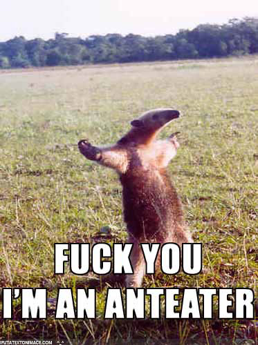

Il ya le chess boxing, une alternance de rounds de boxe et de tours d’échecs.
Aissen’s digest
7 juillet 2008
À la rencontre de l’esprit et de la matière.
» À la rencontre de l’esprit et de la matière.
{kind=link}
{kind=link}
6 juillet 2008
Volswagen lancera la “One-litre”
» Volswagen lancera la “One-litre”
C’est une voiture qui sera mise en production vers 2012 par le constructeur allemand.
330kg, 2 places, et surtout 1 litre pour 100km. Oui c’est bien ça, un litre pour 100km.
Totalement dans la mouvance, mais pourra-t-on attendre?
5 juillet 2008
À propos d’Erlang et du “défi” multithreading
Erlang est connu dans le monde de l’Open Source par le biais d’ejabberd. Ejabberd est devenu en quelques années un des serveurs jabber les plus utilisés. Pas parce que c’est le plus performant des serveurs. Mais parce que c’est celui qui passe le mieux à l’échelle. On rajoute des serveurs(ou des processeurs), et sans modifier le programme, le nombre de clients supportés parallelement augmente. Comme un cluster, mais sans la lourde programmation que cela implique.
C’est en fait ça la magie d’erlang.
Maintenant, est ce que cela suffira à exploiter automatiquement mieux les futurs processeurs à N coeurs? J’en doute, car erlang est conçu pour gérer des “noeuds” dans des architectures clients/serveurs (le plus souvent).
Je pense que la solution au changement radical de l’architecture des ordinateurs personnels (les serveurs et autre clusters connaissent ça depuis longtemps), viendra plus d’une démocratisation des outils d’abstraction du multithreading dans des langages/framework couramment utilisés, ou encore d’initatives comme OpenMP voire OpenCL.
Tribute to UCI

{kind=link}
4 juillet 2008
Perspective
It’s a classic, but still very interesting to watch. But it may get dizzy.
(Lire la suite…)
La ville sur l’eau

Devinez où c’est.
(Lire la suite…)
3 juillet 2008
Prendre une photo sans diriger l’objectif vers la cible
» Prendre une photo sans diriger l’objectif vers la cible
C’est possible grâce à la physique quantique: les chercheurs utilisent des photons jumeaux pour prendre des photos (pour l’instant des formes) d’objets qui n’émettent même pas de lumière directement vers le capteur de la caméra!
Entre 655€ et 786€ le Mégaoctet!
C’est ce qu’il coute d’envoyer des messages texte depuis son mobile(SMS) en France…
Inspiré par techcrunch.
Chrono Trigger porté sur DS!

Beaucoup de posts jeux vidéos, mais je ne pouvais pas laisser passer ça. Chrono Trigger, un des meilleurs RPG de tous les temps (mais jamais sorti en Europe) va être porté sur DS.